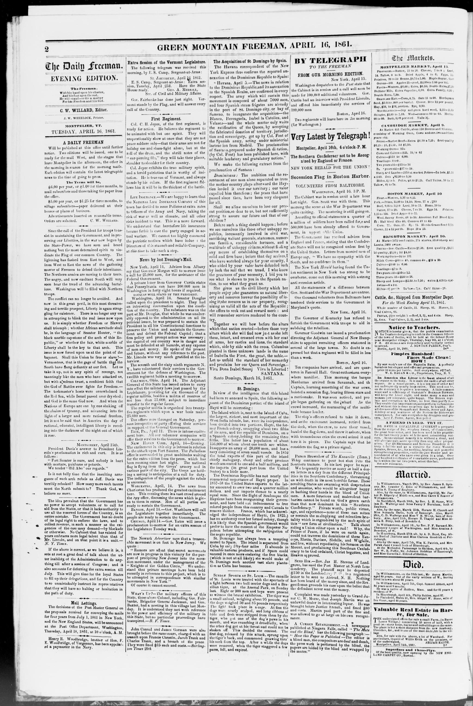
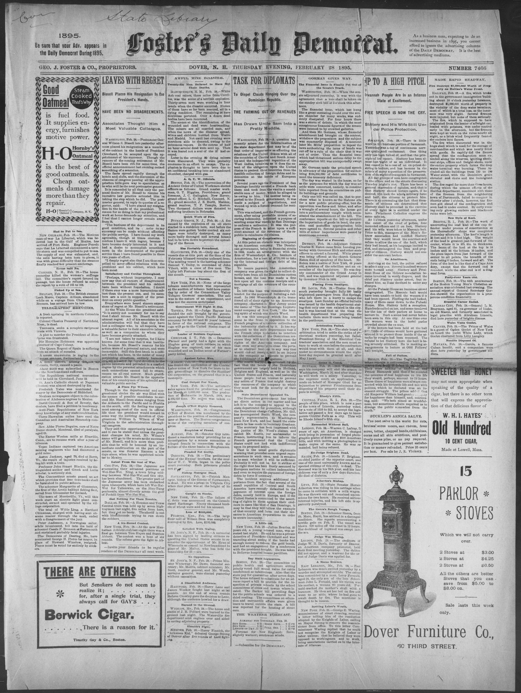

ErasEras
The eras that organize this collection, each one told from its own articles.Las eras que organizan esta colección, cada una contada desde sus propios artículos.
A Revolution Next DoorUna revolución al lado

In the former part of October, the Delaware Indians passed through
American newspapers discovered Hispaniola through Haiti's revolution.
Los periódicos estadounidenses descubrieron La Española a través de la revolución de Haití.
Invasion, Occupation, and IndependenceInvasión, ocupación e independencia
When Boyer's army entered Santo Domingo in February 1822, most American newspapers reported it in the calm language of administration: a government extended over new territory, order kept, trade reopened.
Cuando el ejército de Boyer entró en Santo Domingo en febrero de 1822, la mayoría de los periódicos estadounidenses lo contó con el lenguaje tranquilo de la administración: un gobierno extendido sobre un territorio nuevo, el orden mantenido, el comercio reabierto.
Invasion, Occupation, and IndependenceInvasión, ocupación e independencia
A Republic Looking for RecognitionUna república en busca de reconocimiento

Late from St. Domingo.
American coverage of the young Dominican Republic mixed genuine sympathy with calculation.
La cobertura estadounidense de la joven República Dominicana mezcló simpatía genuina con cálculo.
A Republic Looking for RecognitionUna república en busca de reconocimiento
Annexation to Spain and the Restoration WarLa anexión a España y la Guerra de la Restauración

Following the closing lines of a proclamation dated Santo Domingo
American newspapers covered these years through the lens of their own Civil War.
Los periódicos estadounidenses cubrieron estos años con el lente de su propia Guerra Civil.
Annexation to Spain and the Restoration WarLa anexión a España y la Guerra de la Restauración
The American Annexation FightLa lucha por la anexión estadounidense

The report covers the debate in both chambers on the joint
After Spain withdrew, the annexation argument moved to Washington.
Después de la retirada de España, el argumento de la anexión se mudó a Washington.
The American Annexation FightLa lucha por la anexión estadounidense
Sugar, Debt, and StrongmenAzúcar, deuda y caudillos

In 1892 Westendorph Co. transferred all of their rights to an American company
In the last quarter of the nineteenth century, American coverage of the island moved largely to the business pages.
En el último cuarto del siglo XIX, la cobertura estadounidense de la isla pasó en gran parte a las páginas de negocios.
Collapse and the Customs QuestionColapso y la cuestión de las aduanas
Heureaux was assassinated in July 1899, and American newspapers settled into a narrative of collapse.
Heureaux fue asesinado en julio de 1899, y los periódicos estadounidenses se instalaron en una narrativa de colapso.
Collapse and the Customs QuestionColapso y la cuestión de las aduanas
The Customs ReceivershipLa receptoría de aduanas

Treaty Ratified by San Domingo
From 1905 the United States collected the Dominican customs, first by agreement and then, in 1907, by treaty: an American receiver-general divided the revenue between the Dominican government and its foreign creditors.
Desde 1905, Estados Unidos cobró las aduanas dominicanas, primero por acuerdo y luego, en 1907, por tratado: un receptor general estadounidense dividía los ingresos entre el gobierno dominicano y sus acreedores extranjeros.
The American OccupationLa ocupación estadounidense
In 1916 the United States Marines landed, and American coverage of the eight years that followed was largely written from inside the occupation's own frame.
En 1916 desembarcaron los marines de Estados Unidos, y la cobertura estadounidense de los ocho años siguientes se escribió en gran parte desde dentro del marco de la propia ocupación.
Trujillo EraEra de Trujillo

Massacre Stories Assailed as Lies
Rafael Leónidas Trujillo came up through the constabulary the occupation had built, seized power in 1930 and held it for thirty-one years.
Rafael Leónidas Trujillo salió de la guardia que la ocupación había construido, tomó el poder en 1930 y lo retuvo durante treinta y un años.
Post-TrujilloPost-Trujillo
Trujillo was assassinated on May 30, 1961, and American newspapers covered what followed as a Cold War emergency.
Trujillo fue asesinado el 30 de mayo de 1961, y los periódicos estadounidenses cubrieron lo que siguió como una emergencia de la Guerra Fría.
The TriumvirateEl Triunvirato
In September 1963 the military overthrew President Bosch, seven months into his term, and installed a civilian triumvirate — the Triunvirato, soon dominated by Donald Reid Cabral.
En septiembre de 1963, los militares derrocaron al presidente Bosch, a los siete meses de su gobierno, e instalaron un triunvirato civil — el Triunvirato, pronto dominado por Donald Reid Cabral.
The April War and the Second InterventionLa Guerra de Abril
These years stand on the timeline between the Triumvirate and the Democratic Opening.Estos años quedan en la cronología entre el Triunvirato y la apertura democrática.
Balaguer's Twelve YearsLos Doce Años de Balaguer
These years stand on the timeline between the Triumvirate and the Democratic Opening.Estos años quedan en la cronología entre el Triunvirato y la apertura democrática.
The Democratic OpeningLa apertura democrática
American newspapers greeted the 1978 election as a democratic success story: when the military tried to halt the count, pressure from Washington helped force it through, and Antonio Guzmán of the Dominican Revolutionary Party took office in a transfer of power the press could celebrate.
Los periódicos estadounidenses saludaron la elección de 1978 como una historia de éxito democrático: cuando los militares intentaron detener el conteo, la presión de Washington ayudó a forzarlo, y Antonio Guzmán, del Partido Revolucionario Dominicano, asumió el poder en una transferencia que la prensa pudo celebrar.